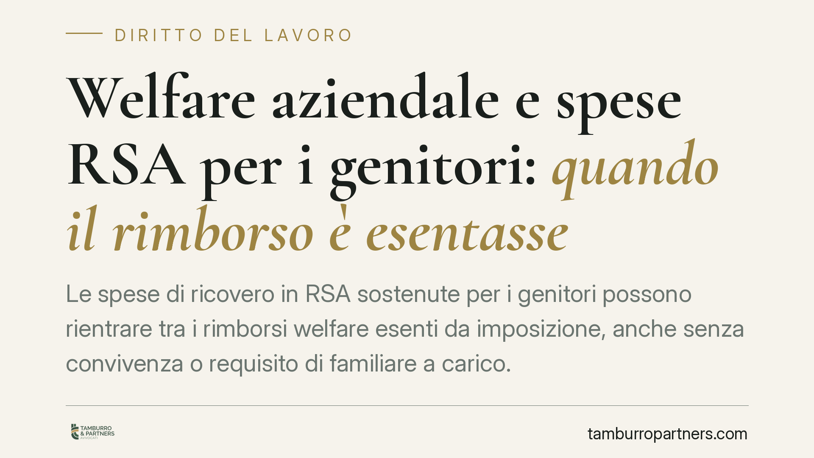

Welfare aziendale e spese RSA per i genitori: quando il rimborso è esentasse
Le spese di ricovero in RSA sostenute per i genitori possono rientrare tra i rimborsi welfare esenti da imposizione, anche senza convivenza o requisito di familiare a carico. La lettura si fonda sull'art. 51 TUIR e sulla nozione civilistica di familiare. Per lavoratori e datori è un'opportunità concreta, ma richiede documentazione rigorosa e prudenza applicativa.

Il tema
Un nodo ricorrente nella gestione dei piani di welfare aziendale riguarda l'assistenza ai familiari anziani. La domanda è semplice: il rimborso delle rette di una RSA (Residenza Sanitaria Assistenziale) per i genitori del dipendente gode dell'esenzione fiscale prevista per il welfare, oppure va tassato come reddito di lavoro?
La prassi interpretativa recente dell'Agenzia delle Entrate si è orientata verso l'esenzione, chiarendo l'applicazione di norme già vigenti. Un'avvertenza doverosa: gli estremi puntuali delle singole risposte a interpello vanno sempre verificati alla fonte prima di fondare su di essi una scelta operativa. Qui ci concentriamo sull'impianto normativo, che è ciò che conta davvero.
Inquadramento normativo
La base dell'esenzione è l'art. 51, comma 2, TUIR. La lettera f) esclude dal reddito di lavoro dipendente le opere e i servizi, riconosciuti volontariamente dal datore o previsti da contratto/regolamento, con finalità di educazione, istruzione, ricreazione, assistenza sociale e sanitaria o culto, offerti alla generalità dei dipendenti o a categorie e ai loro familiari. La lettera f-bis) riguarda invece le somme e i servizi per l'educazione e l'istruzione dei familiari (rette scolastiche, borse di studio, servizi di baby-sitting).
Il punto decisivo è la nozione di familiare. La disposizione richiama i soggetti indicati nell'art. 12 TUIR, ma per la sola individuazione dei familiari, non per il requisito del carico fiscale. È qui che spesso si genera confusione: l'art. 12 TUIR serve a identificare *chi* è familiare (tra cui i genitori, ai sensi dell'art. 433 c.c. sugli obbligati agli alimenti), non a imporre che quel familiare sia fiscalmente a carico. Ne discende una conseguenza pratica rilevante: non è richiesta la convivenza né lo status di familiare a carico perché il rimborso benefici dell'esenzione.
Un chiarimento sulla natura delle prese di posizione dell'Agenzia. La prassi interpretativa non ha "efficacia retroattiva" in senso tecnico: chiarisce come applicare norme già in vigore. Per questo la lettura può rilevare anche per i rimborsi erogati nell'annualità in corso e in quella precedente, entro i limiti di legge e sempre che ne ricorrano i presupposti.
Due profili distinti, due basi normative
È importante non sovrapporre due fattispecie diverse.
Il primo profilo riguarda le spese RSA per i genitori, che si colloca nell'ambito dell'assistenza sociale e sanitaria della lettera f) e ruota attorno alla nozione di familiare.
Il secondo profilo riguarda le spese scolastiche pagate dal coniuge, che attiene alla lettera f-bis). Qui il punto è la riferibilità della spesa: ciò che rileva è che il costo sia sostenuto per l'educazione o l'istruzione di un familiare del dipendente, a prescindere da quale coniuge abbia materialmente effettuato il pagamento. La documentazione deve però consentire di ricondurre la spesa al familiare del lavoratore beneficiario.
Implicazioni pratiche
Per il lavoratore, il rimborso welfare rappresenta un vantaggio economico netto: la somma non concorre a formare il reddito imponibile, a differenza di un aumento retributivo equivalente.
Per il datore di lavoro, il vantaggio è duplice. Da un lato, si offre un beneficio apprezzato senza il costo fiscale e contributivo tipico della retribuzione monetaria; dall'altro, i costi dei servizi di welfare sono deducibili nei limiti previsti dalla normativa, a seconda che l'erogazione sia volontaria, regolamentare o contrattuale.
Il beneficio non è automatico. Serve un piano welfare correttamente strutturato, con previsione idonea (contratto, regolamento o accordo) e un impianto documentale in grado di reggere un eventuale controllo.
Cosa fare in concreto
- Verificate il titolo istitutivo del welfare: accertate che il piano contempli l'assistenza sociale e sanitaria ai familiari ai sensi dell'art. 51, comma 2, lett. f) TUIR e che sia rivolto alla generalità o a categorie di dipendenti.
- Raccogliete la prova documentale rigorosa: fatture e quietanze della RSA intestate in modo tracciabile, con evidenza della prestazione e riferibilità al genitore del dipendente.
- Documentate il legame di parentela con la certificazione anagrafica idonea, senza pretendere convivenza o carico fiscale, che non sono richiesti.
- Distinguete le pratiche RSA-genitori (lett. f) dalle spese scolastiche (lett. f-bis), applicando a ciascuna la corretta gestione documentale.
- Verificate gli estremi di prassi prima di fondare una scelta su una singola risposta a interpello, o richiedete un vaglio professionale sul caso specifico.
Disclaimer
Contributo informativo a cura di Tamburro & Partners - Avv. Giuseppe Tamburro. Non costituisce parere legale.
Ogni storia di lavoro ha i suoi tempi.
Se gestisci HR e vuoi un confronto su contenzioso, ispezioni o licenziamenti, scrivi allo studio. Ti rispondiamo entro un giorno lavorativo.